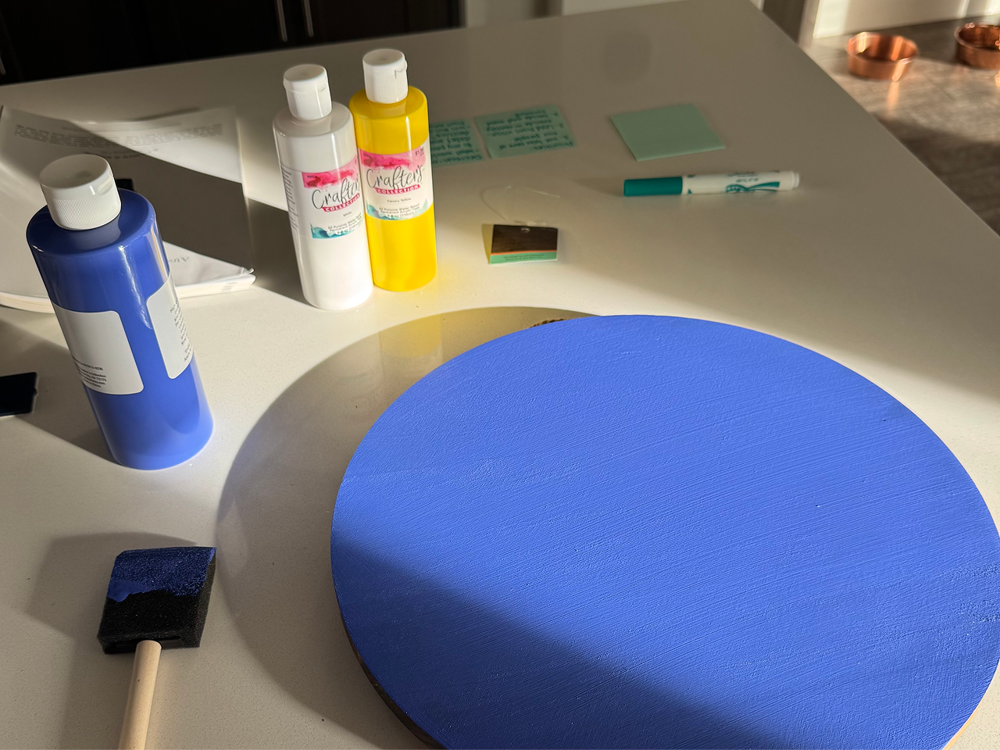
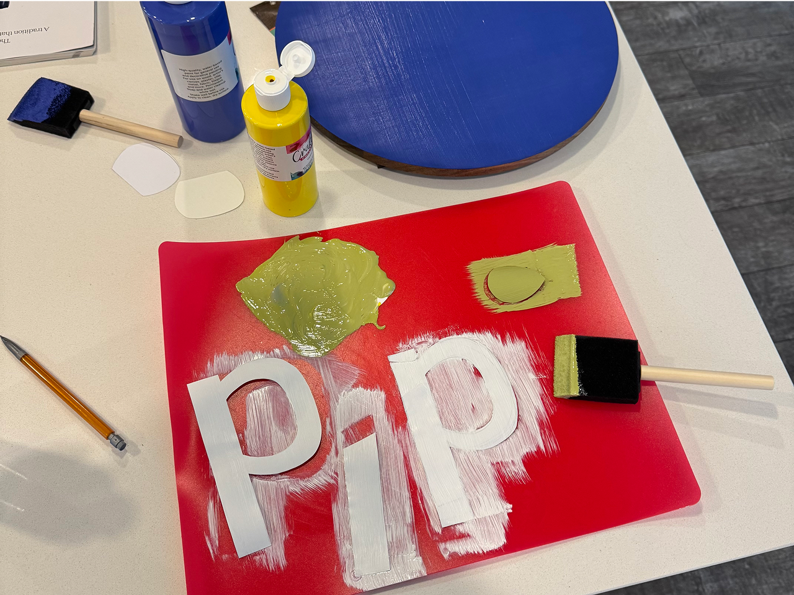
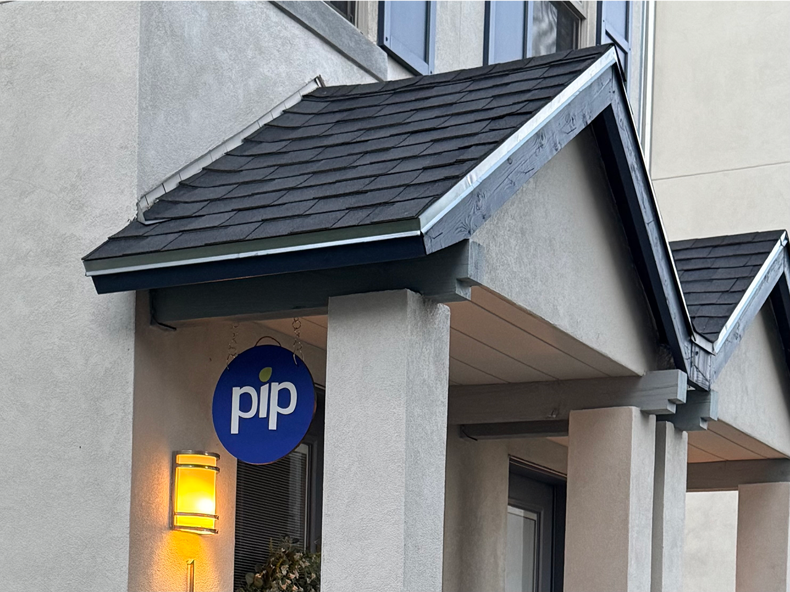

Did you know you need a storefront sign for your business to get verified as a legit operation? We sure didn’t!
“Sometimes building the American dream requires a sprinkle of good old fashioned stubbornness.”
A client told us this a month ago in a discovery workshop, and they’d be proud to see this: In order to jump through one of Google’s verification hoops, I made a sign this weekend out of a painted cutting board and stickers I cut out with an xacto knife so people can find our home business storefront.
The fact that the paint off the shelf matched our blue exactly made this one of the very many examples of feeling like Pip wants to exist but needs proof we’re all in.
My biggest piece of advice as one new business owner to another: Don’t let “perfect” keep you from getting to “done.” There’s a lot of roadblocks along the way, but push through! We believe in you!
One day, we’ll have an office with a legit sign, but for now we’ll stick with homemade where it doesn’t matter as much. We’d rather spend more time helping our people solve their bigger problems!
Keep on growing 🌱
– Eric Moore, August 11, 2025